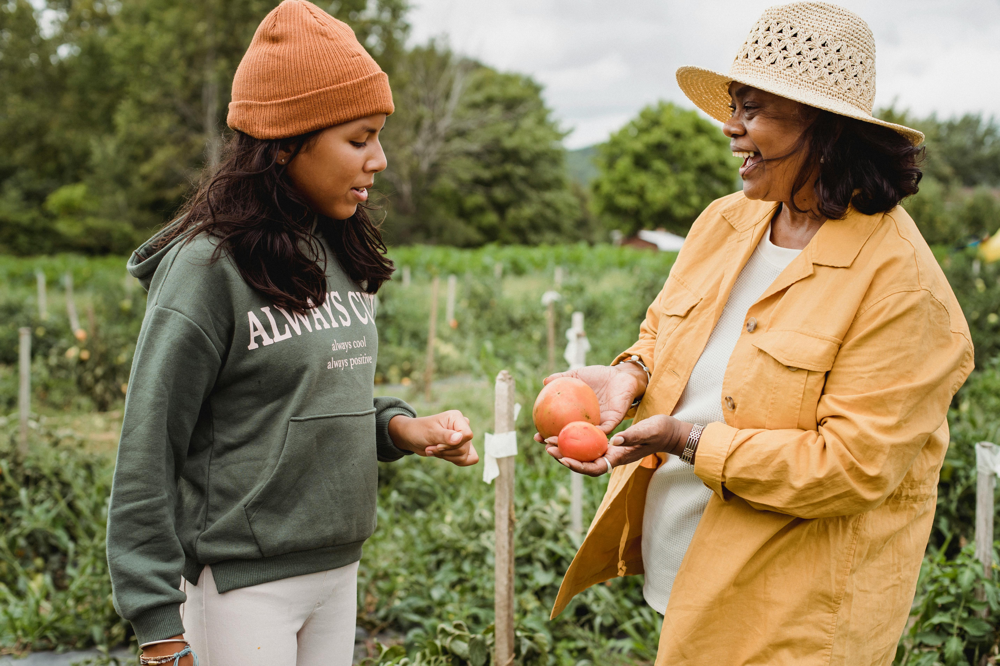
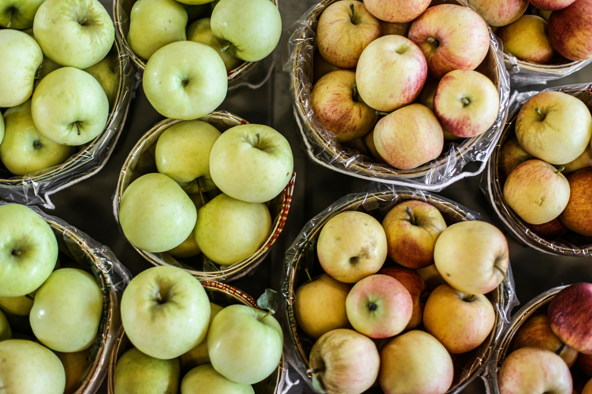

Grove Organic Farm
At Grove Organic Farms, we believe in the power of nature to nourish both body and soul. Our mission is simple: to provide fresh, organic, and sustainably grown produce straight from our fields to your table. Nestled in the heart of the community, we are committed to supporting healthy lifestyles, promoting environmental stewardship, and fostering a deeper connection between people and the food they eat.

Our farm is more than just a place where food is grown — it’s a thriving ecosystem where every seed, root, and leaf is treated with care. We prioritize quality, flavor, and health, ensuring that every item we harvest is bursting with natural goodness. From crisp vegetables to juicy fruits, our produce reflects the best that each season has to offer.
Becoming a part of the Grove Organic Farms family means more than just buying produce. It’s about supporting local agriculture, connecting with like-minded individuals, and taking a step toward a healthier, more sustainable future. Join our CSA (Community Supported Agriculture) program to enjoy a regular supply of seasonal produce, exclusive member perks, and a firsthand view of where your food comes from.

Looking for a family-friendly outing? Schedule a tour and experience the magic of farm life. Meet the growers, see how our produce is grown, and explore the natural beauty of our fields. It’s an educational and memorable adventure for all ages.
By choosing Grove Organic Farms, you’re supporting farming practices that protect the planet for future generations. We embrace eco-friendly techniques, avoid harmful chemicals, and promote biodiversity in every part of our growing process. It’s good for you, good for the community, and good for the Earth.

Whether you’re looking for fresh produce, farm tours, or a deeper connection to your food, Grove Organic Farms is here for you. Explore our website to learn more about our story, shop for fresh produce, sign up for a CSA membership, or plan your next visit to the farm. We’re excited to share our harvest with you.